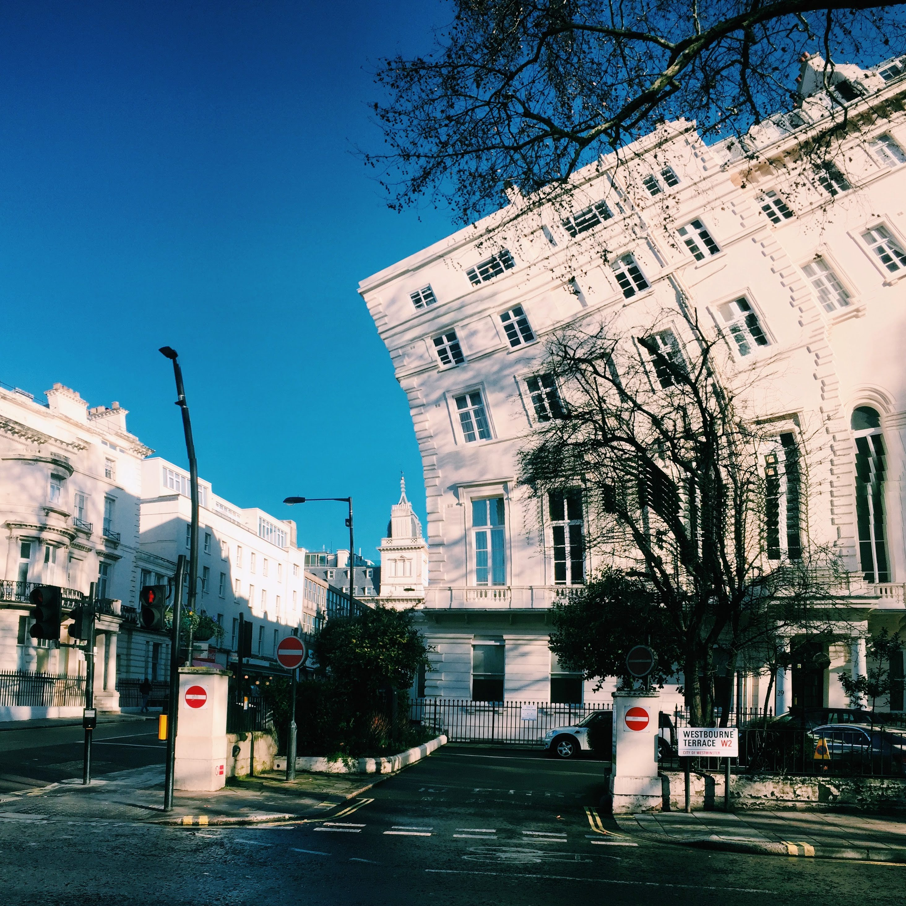
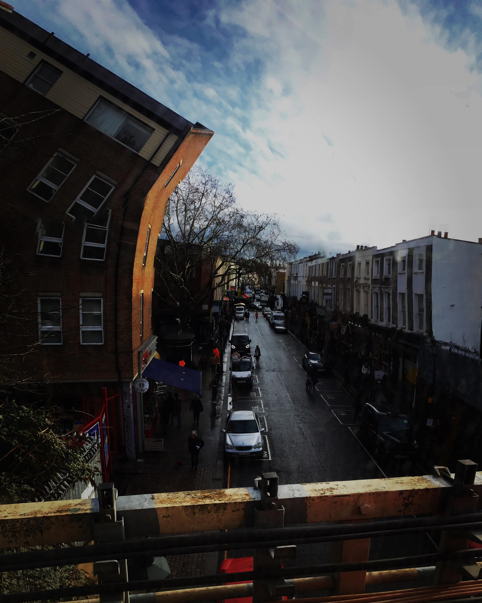
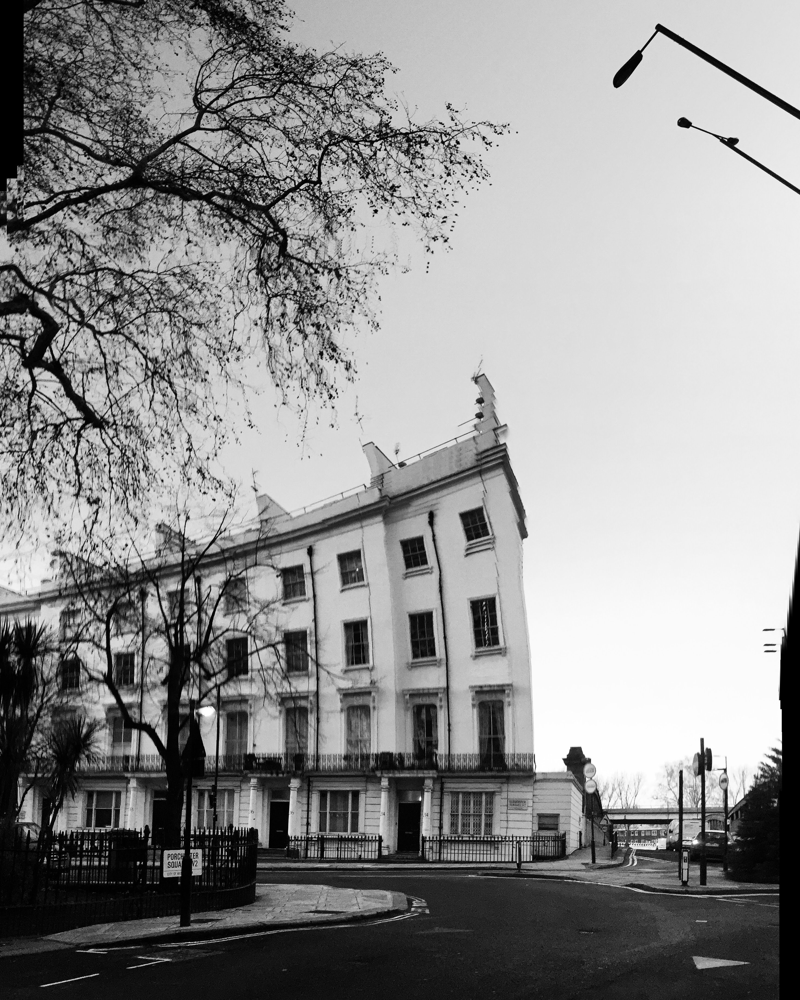
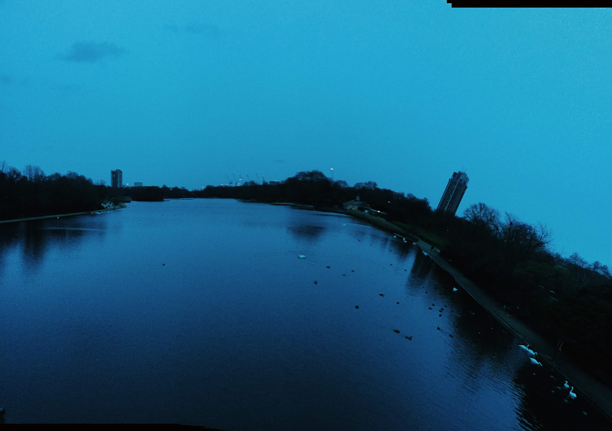
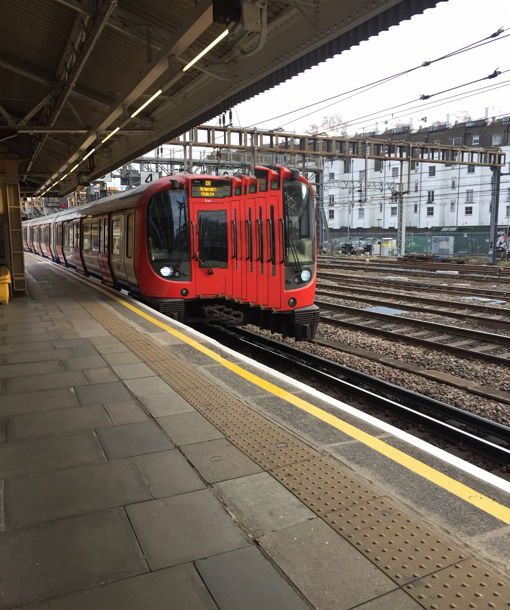
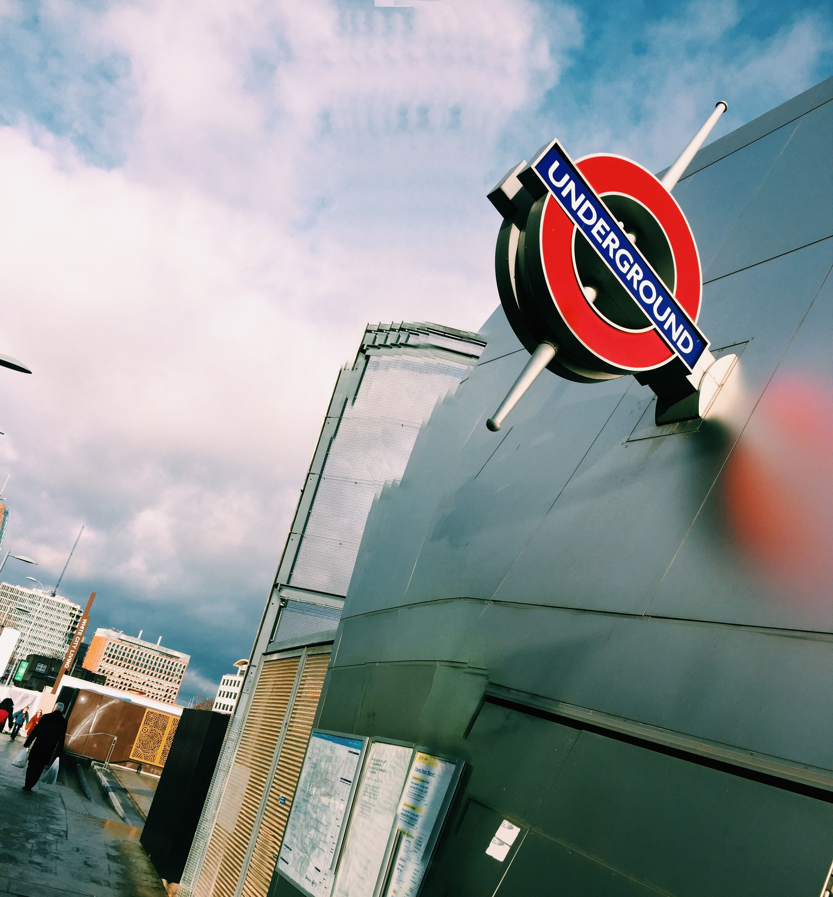
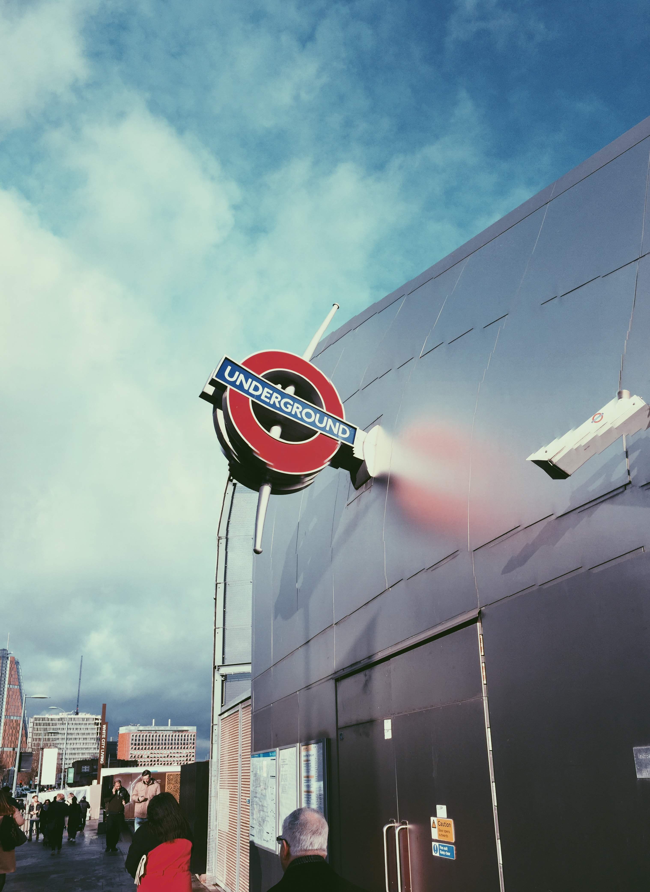
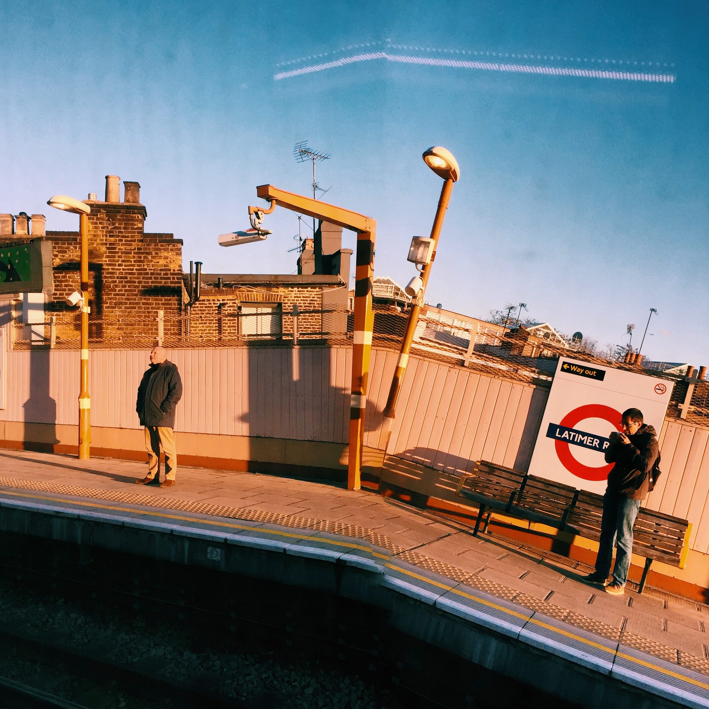

The technique
I lived in London for a few years, in the W11 pocket between Notting Hill and Bayswater. At some point I started taking photos on panorama mode and deliberately not doing it properly — moving too fast in parts, dipping the phone mid-sweep, pausing for a second. What came back were images that looked more like how the city felt than how it looked.
The panorama setting works by stitching together a series of frames as you sweep. When the frames don't line up — because you moved unevenly, or tilted, or hesitated — you get bends. Buildings curve. Streets lean. The architecture folds into itself in ways that aren't entirely wrong, just slightly off from reality. The results are unpredictable. That's the point.
How to do it
Open Camera → Pano. Sweep as normal, but introduce a small irregularity: slow down briefly in the middle, tilt the phone slightly up or down mid-movement, or speed up at the end. The bigger the inconsistency, the more dramatic the bend.
What works best: Strong vertical lines (buildings, lampposts, tube platforms). Clear skies. Low winter light. Architecture that already has curves — it exaggerates them.
No editing required. The distortion is baked in by the camera. The VSCO filter is optional.


Left: Westbourne Terrace, W2. Right: Portobello Road from the train bridge, looking south.
The neighbourhood
Most of these are from W11 and W2 — the white stucco terraces, the tube platforms, street level from the train bridge on Portobello Road. The light in that part of London in winter is clean and low and useful for this kind of thing. Blue skies, long shadows, buildings that are already dramatic enough that a small distortion tips them somewhere else entirely.


Left: Porchester Square, W2. Right: Barri Gòtic, Barcelona.
"One from Barcelona too. The narrow alleys in the Gothic Quarter compress like this naturally — the panorama just makes it official."
— Dave

The Serpentine, Hyde Park. Blue hour. The sweep exaggerates the curve of the lake.
The Serpentine is a good test case. The lake already curves — the panorama traces that curve and then keeps going, bending the treeline and the towers on the far bank into something almost painted. This one I took while walking home, didn't stop, just swept the phone as I moved. The slight camera shake is part of it.
The tube
The tube platforms work particularly well. The architecture is already curved — the platforms on the Circle and District lines sweep around gentle bends — and the panorama exaggerates the arc. You get platforms that seem to go on forever, or fold back on themselves. The Victorian brick stations especially.


Left: Circle line. Right: Latimer Road, golden hour.


Left: Underground roundel, low angle. Right: Bayswater station, opened 1868.
The verdict
Bayswater station — opened in 1868, brick arches, original ironwork staircase, glass roof — looks like it belongs in a different dimension when you do this. Which is roughly how London feels on a good day anyway. I went through a phase of doing this regularly. It probably reflected something about my own warped sense of reality at the time. But the photos held up. If you're bored with your standard phone shots, this takes about thirty seconds to try and costs nothing. Open Pano. Move wrong. See what comes back.